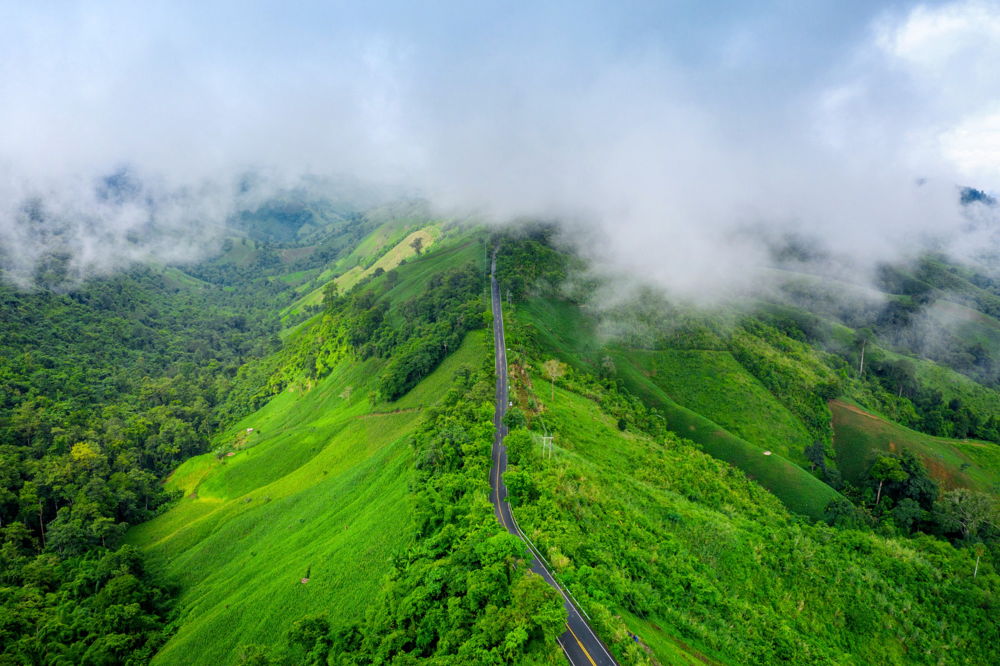
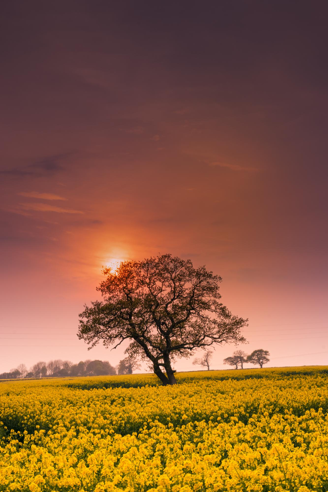
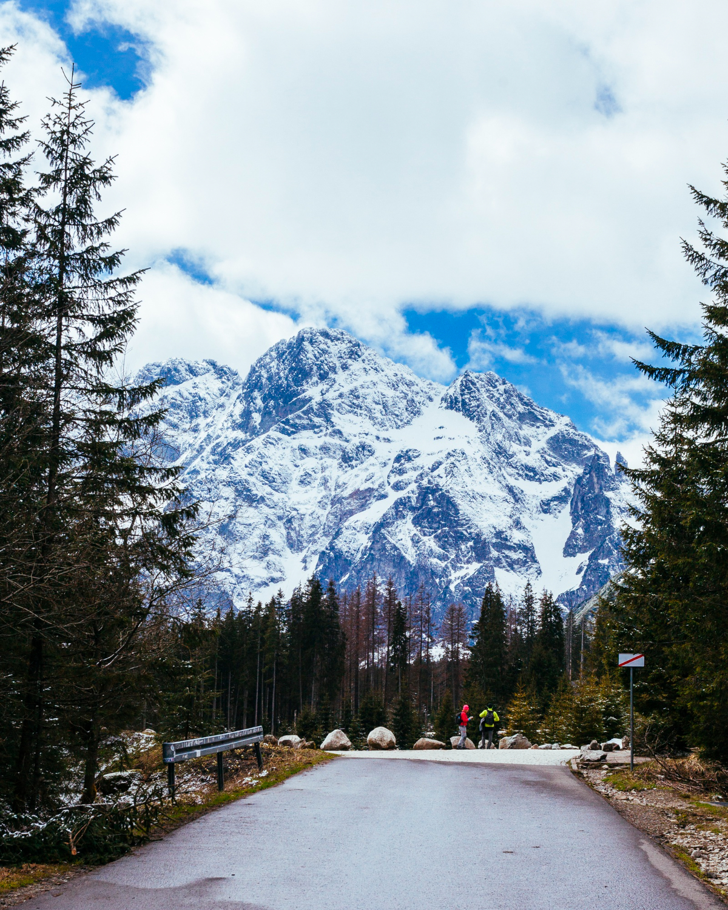
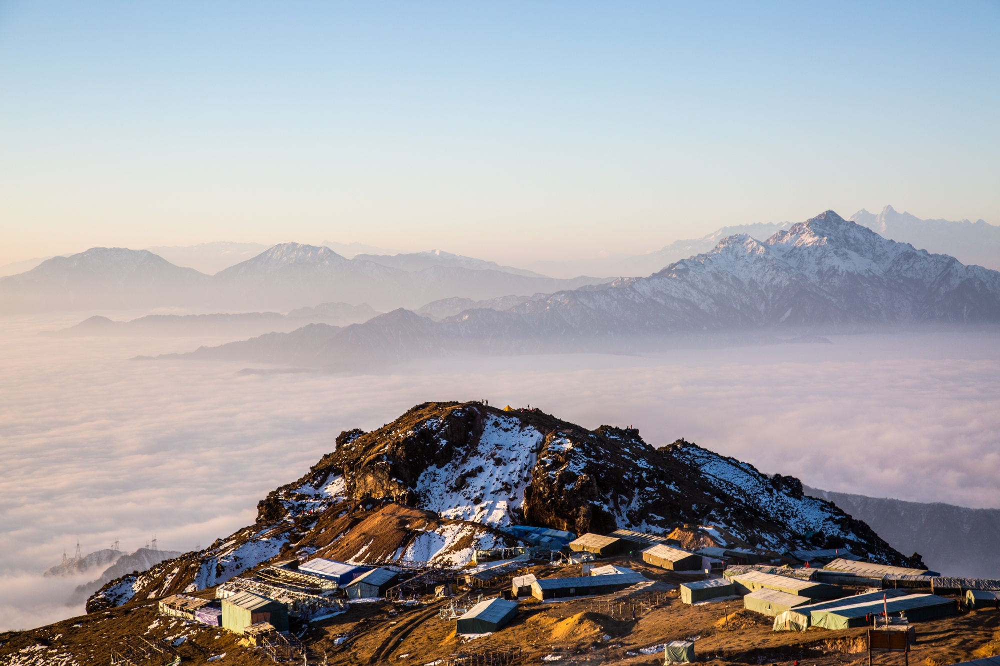
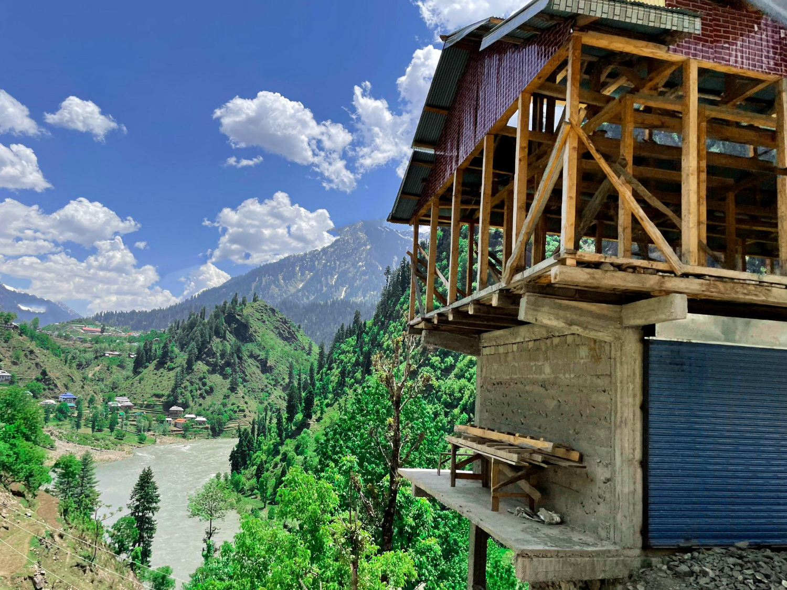
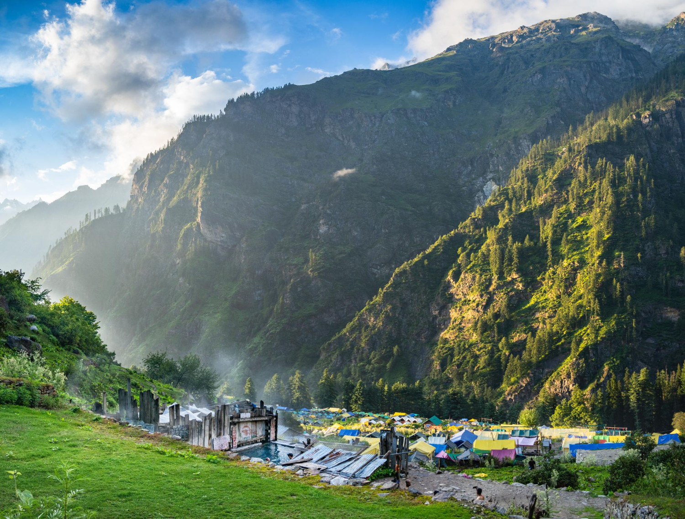
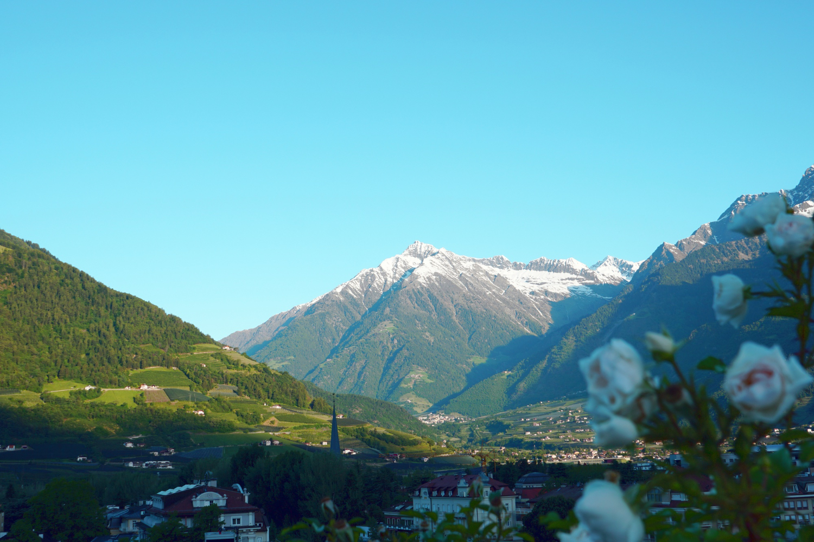
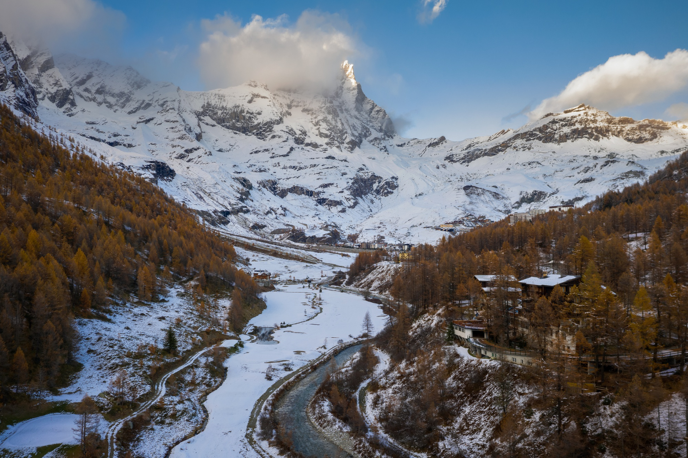

Golden hour sessions
Soft evening light in Bir creates the perfect mood for reflective painting and calm conversations.
Kumkum Arts Gallery
Explore pottery, painting, nature, and community moments captured across our immersive creative getaways.
Bir naturally blends creative focus with adventure energy. You can start your morning with valley views, spend your afternoon shaping clay or painting, and end your day with warm food, shared stories, and stillness. This contrast is exactly why every frame here feels alive.








Creative rhythm
Every retreat has a simple but powerful flow: arrive, settle in, learn techniques, experiment freely, and finally take home work that feels truly yours. This progression gives beginners confidence while still keeping space for playful exploration.

Soft evening light in Bir creates the perfect mood for reflective painting and calm conversations.
We focus on touch, texture, and process so even first-time participants feel creative in minutes.
Shared meals, tea breaks, and studio laughter make this retreat feel as human as it is artistic.
Visual Journey
Tea, mountain air, and a quiet orientation to prepare your mind before hands-on practice begins.
Live demos and guided instructions help you build technique without pressure or perfection anxiety.
Dedicated free-creation windows where you explore your own style with mentor support nearby.
Walks, café stops, and scenic pauses keep your energy fresh and your imagination active.
Group sharing circles and warm dinners turn individual creativity into a shared retreat memory.
Participants often tell us they come for pottery or painting, but leave with something deeper: a renewed pace of life. The blend of mountain stillness and guided creativity helps them reconnect with focus, confidence, and joy.
This gallery intentionally showcases that emotional arc. You can see beginnings, experiments, small wins, and proud final creations. That is the heart of Kumkum Arts - not just classes, but a complete creative environment where people feel supported and inspired.
Ready for your story?
Experience these moments in real life - create, connect, and return home with art that carries your journey.